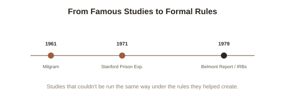

Chapter 5: How These Studies Changed Research Ethics
This topic has drawn heavily on Milgram's and Zimbardo's studies, and Chapter 1 already flagged that the Stanford Prison Experiment has faced serious, credible criticism in recent years. That flag deserves a full chapter, because these two studies didn't just produce famous findings — they directly caused a permanent, structural change in how psychological research on human subjects is allowed to be conducted at all.
What actually happened to Milgram's participants
Milgram's participants weren't told the real purpose of the study beforehand — they believed they were testing how punishment affects learning, not obedience to authority — and many experienced real, significant distress during the experiment itself: sweating, trembling, nervous laughter, in a few documented cases what observers described as full seizures. Milgram did debrief every participant afterward, revealing the deception, explaining the real purpose, and reintroducing them to the unharmed "learner" — and follow-up surveys found the large majority of participants reported no regret and considered the experience valuable. But the ethical objection that gained force over the following years wasn't really about long-term harm alone; it was about whether deceiving participants into believing they were seriously hurting another person, and observing their genuine distress while they did, was ever justifiable to obtain data — regardless of how the participants felt about it afterward.
The Stanford Prison Experiment's deeper problem
Chapter 1 already noted that later investigation — most thoroughly by French researcher Thibault Le Texier, using archival recordings Zimbardo himself had kept — found that Zimbardo and his research team actively coached several "guards" toward escalating cruelty, rather than the behavior emerging purely and spontaneously from the assigned role, as the original, hugely influential account claimed. This is a different and arguably more serious kind of problem than Milgram's: not just an ethical question about whether the study should have been run, but a methodological one about whether the headline finding — ordinary people spontaneously become cruel when given unchecked power over others — was accurately describing what actually happened in the basement of Stanford's psychology building. The study is still taught, but with that caveat now treated as essential context, not a footnote.

The Belmont Report and the birth of modern research ethics
Public and academic concern over studies like Milgram's — alongside separate, far graver ethical violations like the U.S. Public Health Service's Tuskegee syphilis study, in which Black men were deliberately left untreated for decades without their knowledge so researchers could observe the disease's natural progression — led to the U.S. National Commission for the Protection of Human Subjects publishing the Belmont Report in 1979. It established three core principles now foundational to research ethics broadly: respect for persons (requiring genuine informed consent, and extra protections for people with reduced capacity to consent), beneficence (weighing potential benefits of the research against risks of harm to participants, not just to the field's knowledge), and justice (ensuring the burdens and benefits of research are distributed fairly, rather than concentrated on vulnerable populations who bear the risk while others benefit from the knowledge). This report is the direct ancestor of the Institutional Review Board (IRB) system now required at essentially every research institution — a study designed like Milgram's original, with its level of deception and induced distress, would almost certainly be rejected by a modern IRB before ever being allowed to run.
What this means for reading the studies today
None of this erases what Milgram's and Zimbardo's work — the second study more caveated than the first — genuinely revealed about obedience and situational power, much of which has been independently replicated using far more ethical modern methods (including studies using immersive virtual reality "victims," which sidestep the original deception problem almost entirely while reproducing strikingly similar obedience patterns). But reading this topic accurately means holding two things at once: the core phenomena — ordinary people obeying authority further than predicted, conformity bending honest judgment, situational pressure shaping behavior more than personality alone — are genuinely well-supported across decades of subsequent, more careful research; and the specific, famous studies that first put these ideas on the map were flawed in ways that took decades to fully surface, a pattern this library keeps returning to across multiple topics: findings can be real even when their most famous original demonstration turns out to be shakier than its reputation suggests.
Try this
Ideas for noticing or testing this in your own life.
- Next time you cite a famous psychology study in conversation, check whether you know its actual methodological history — Milgram's and Zimbardo's studies are exactly the kind of case where the popular version and the fuller, more caveated version diverge.
- Think about the Belmont Report's three principles applied outside research — respect for consent, weighing benefit against harm, fair distribution of burden — as a general-purpose ethical checklist for any situation involving power over someone else.
Worth pulling on?
A few loose threads from this chapter — if any of these genuinely grab you, that's a good sign of where to go next.
- The pattern of a famous, highly-cited finding turning out to be more fragile than its reputation — while a version of the underlying phenomenon survives independent replication — runs through more of psychology than just this topic. → Already in the library: Philosophy of Science's chapter on the replication crisis covers this pattern at the level of the whole field.
- The Belmont Report's justice principle — that research risks shouldn't fall disproportionately on vulnerable populations — connects to a broader history of research ethics failures worth knowing on its own terms, including Tuskegee. → Not covered in depth here — a serious, sobering topic worth its own dedicated reading.